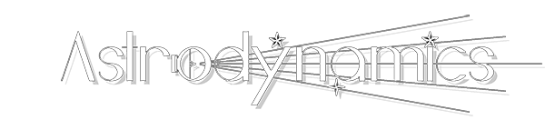
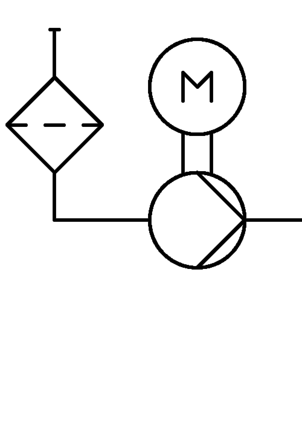
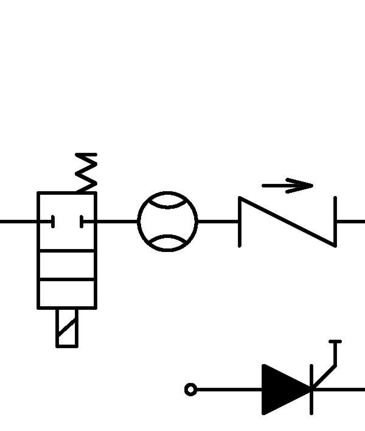
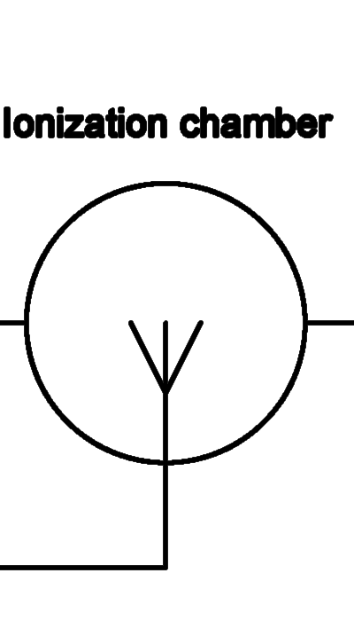
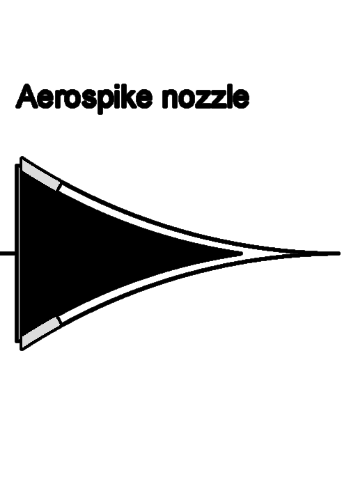

Designed and engineered by
NikitoDos
Starseeker Modular Telescope
Ikarus-X Final Report
Click here to access this resource
Ikarus-Y 3D Model
Ikarus-Y Remote Control Panel
Low-Tension Battery Level
10%
Engineering section
High-Tension Battery Level
10%
Starboard Laserfan
RPM
Health
ND
ND




Pitch
Yaw
ND°
ND°
Port Laserfan
RPM
Health
ND
ND
Pitch
Yaw
ND°
ND°
Navigation section
Position
Time of Flight
Stability of Flight
Remote Control
High-Tension Source
ND° ND - ND° ND
T + ND min
ND
ND
Sun
Temperature
Gears
Parachute
Engines
Altitude
Speed
Sensitivity
ND °C
ND
ND
ND
ND M
ND kts